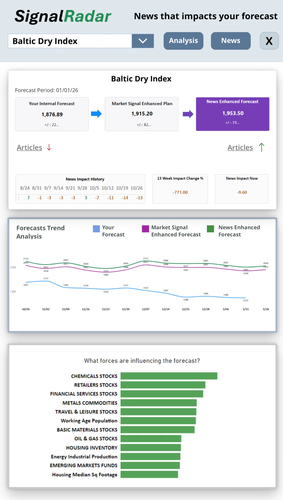
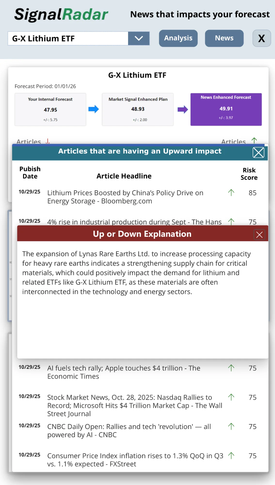

News breaks before results do. We turned that timing gap into your competitive advantage.
Yes. Really.
Here’s what every CFO knows: major impacts on your business show up in news before they show up in your results. Tariff announcements. Commodity shocks. Consumer sentiment shifts. Supplier disruptions. They all make headlines weeks or months before they hit your quarterly earnings.
But here’s what almost no one has figured out: how to turn those news signals into actual forecasts. Until now.
SignalRadar’s AI doesn’t just monitor news—it models how specific events will impact your key metrics like your margins, your COGS, your demand. We’re not talking about sentiment scores or trend reports. We’re talking about quantified predictions mapped to your key metrics.
When steel prices start moving in Shanghai, you don’t just get an alert. You get a “news adjusted forecast” showing the exact impact on your next quarters metrics—weeks before it shows up in your actuals.
That’s not business intelligence. That’s predictive intelligence.
And yes, it actually works. Which is why the companies using it don’t talk about it.
Forecast Period: January / 2026
HOW IT WORKS
This is genuinely new. Here’s why it’s possible now when it wasn’t possible even five years ago.
Most AI reads news for sentiment or themes. Ours reads for quantifiable business impact. When a port strike is announced, it doesn’t just flag ‘supply chain risk.’ It models the impact this disruption will have on your forecast assumptions. It thinks like an executive and presents a “news adjusted forecast” to consider.
A tariff announcement isn’t just news—it’s a vector that changes your input costs over time. A consumer preference shift isn’t just a trend—it’s a demand curve that affects your mix. We built models that convert news events into quantified impacts on the key metrics you constantly manage. The result? Forecasts that update as events unfold.
We start with your key metrics and any internal forecast specific to your business. Then we layer in the external signals that impact you specifically. This isn’t generic industry prediction. It’s your forecast, adjusted with predictive signals your competitors don’t have.
Markets move in a sequence: First, something happens in the real world. Second, news reports it. Third, weeks or months later, it shows up in corporate earnings. Most executives operate between steps two and three—reading news and reacting once the impact becomes obvious. That’s too late.
SignalRadar compresses that timeline. When news breaks, we’ve already quantified what it means for your next quarter. When your competitors are reading the headline, you’re adapting plans. When they’re surprised by quarterly results, you’re explaining how your forecast was sensitive to changes in time to act. You don’t just stay informed. You stay ahead.
USE CASES
Real competitive advantages for manufacturing leaders who move first
“You know the feeling: guidance week. Finger in the air, best guess on external factors, hope you’re in the right ballpark. What if you didn’t have to guess as much?”
SignalRadar gives CFOs what they’ve never had before: real-time quantified intelligence on external factors that typically blow up guidance. When commodity prices shift, trade policy changes, or demand patterns evolve, you don’t just sense it might matter—you see the potential impact on your forecast, right now.
The result? You guide tighter. You miss less. You build a reputation as the CFO who actually sees around corners. Investors notice. Boards notice. And when market volatility creates uncertainty for everyone else, you’re the executive with conviction backed by data no one else has.
The manufacturers using this don’t guide ±8%. They guide ±5%. And they hit their numbers.
“When a port strike or supplier issue hits the news, everyone scrambles. But by then, you’re reacting with everyone else—no advantage.”
SignalRadar doesn’t predict disruptions. It predicts what disruptions mean for your business. When news breaks about a port strike, factory fire, or regional flooding, we immediately model the impact on your specific key metrics and assumptions.
“Port strike announced in Long Beach. Based on your assumptions about supplier locations and inbound schedules: you can effectively estimate alternate scenarios to plan and/or execute based on news adjusted forecasts and your domain expertise, in a decision window that matters.”
That’s predictive intelligence. The news breaks for everyone. But you’re the only one who knows exactly what it means for your situations, with time to act. While competitors are still assessing the situation, you’ve already taken proactive steps.
“Your biggest pricing decisions are made with 90-day-old market assumptions. That’s a coin flip.”
When you’re pricing a 6-month contract today, you’re not bidding on today’s market—you’re bidding on next quarter’s market. Most manufacturers use trailing data, forecasts and gut feel. That’s how you end up with underwater contracts or lost deals.
SignalRadar helps you see where your input costs are actually heading over your contract period. Commodity prices aren’t just ‘up’ or ‘down’—you see the trajectory, the impact on your current assumptions. You can price aggressively when the market is turning in your favor and build protection when headwinds are emerging.
One CFO told us: “I used to bid RFPs with my fingers crossed. Now I bid them with math.” That’s the difference between guessing and knowing.
THE INNOVATION
The AI breakthrough that makes predictive news intelligence real
Ten years ago, this would have been impossible. Even five years ago, the technology wasn’t there. Modern AI can now understand context at scale—not just reading news, but understanding domain-specific impacts. We can identify and model disruptions that are likely to impact your business. And real-time data infrastructure finally exists to process millions of signals continuously and update forecasts automatically. What used to take armies of analysts weeks to piece together now happens continually, specific to your business assumptions. This is why early adopters matter. Companies who deploy this first are building an information advantage that compounds.
MOBILE APP
Predictive forecasts in your pocket. Make critical decisions from anywhere.

Dashboard View

News Analysis
Access your predictive adjusted forecasts from anywhere. Review impact analysis during meetings. Monitor updates on the move. Make decisions with greater confidence, wherever business takes you.
Most companies react to news. You’ll predict with it.
Stop reacting to quarterly surprises. Start understanding the impact of disruptions early with AI that makes news predictive.
No sentiment scores. No risk ratings. Actual numbers: “Current news could bend the trajectory of your forecast down by 5-8%.”
We don’t just tell you what’s happening. We tell you the impact of what’s happening on YOUR key metrics and forecast assumptions so you can act.
Models trained on your specific business knowledge, assumptions and forecasts. This isn’t generic industry insight—it’s your unique advantage.
Forecasts adapt continually as conditions evolve. You’re always operating with the latest intelligence, not last quarter’s assumptions.
Limited partnerships. Companies using this today are building an information moat their competitors can’t see yet.
ABOUT US
Over our careers, we’ve each built systems that help executives see their businesses more clearly. Forecasting platforms. Analytics infrastructure. Decision support tools. We’ve been fortunate to work with brilliant leaders at some of the world’s most sophisticated companies.
But we kept encountering the same limitation. These leaders could eventually see inside their operations with incredible precision. Every SKU. Every margin. Every trend in their own data. Yet when the real world shifted—a trade policy change, a commodity disruption, a competitive move—they were forced to guess at the impact. Everyone reads the same news. But translating headlines into “what does this mean for my Q3?” remained more art than science.
We started asking: What if we could use news as the signal to predict impact? Not just report what happened, but reliably forecast what those events mean for your business—almost in real-time, as the news breaks?
For years, this felt just out of reach. The technology wasn’t quite there. The data wasn’t quite accessible enough. Predictive models couldn’t quite understand business context the way executives do.
Then something shifted. AI allowed us to convert news into signals we could use to predict business impact. The world’s information became digitized and real-time. We could suddenly process millions of signals and connect them to specific business models. The pieces came together.
That’s when we realized: the problem we’d been circling individually for decades could finally be solved. Not by any one of us alone, but by bringing together everything we’d learned across analytics, forecasting, enterprise systems, and business model design.
SignalRadar is our attempt to build something we’ve each wanted to exist for a long time:
A way for business leaders to understand not just what’s happening in the world, but what it means for their world.
We’re building this because we believe the future of business strategy shouldn’t be about reacting faster to surprises—it should be about seeing them coming and knowing exactly how to respond.
Doug Grimsted is an industry pioneer whose career has been marked by a relentless pursuit of using data and analytics to revolutionize how businesses compete. From his early days at Micro Database Systems (MDBS), the creators of the world’s first client-server relational database, Doug has always been at the forefront of technological innovation.
In the 90s, he collaborated with a team of seasoned professionals to form an ANSI committee aimed at standardizing Xbase. As the CEO of Geneer, he led the development and management of software delivery analytics tools for many of Nielsen’s data products.
At Aginity, Doug made significant strides in transforming business forecasting. Under his guidance, the team developed DemandView, a pioneering demand signal system used by Kroger for inventory forecasting and supplier collaboration. Aginity also introduced their Analytics Management Platform (AMP), sold globally by IBM and now a staple in large enterprises like Kroger, Catalina Marketing, Kohl’s, and Coca-Cola.
Doug’s accolades include the KPMG Illinois High Tech Award, induction into the Chicago/NW Indiana Entrepreneurship Hall of Fame, and being a finalist for the E&Y Entrepreneur of the Year Award. He holds a degree in Industrial Management with a minor in Industrial Engineering and Finance from Purdue University.
Larry Burns is a seasoned professional whose expertise intersects Marketing Technology, Data Science, Human Behavior, and Practical Promotions. His hands-on experience with these disciplines started long before they became buzzwords.
As the long-serving CEO of the pioneering digital marketing firm StartSampling, Inc., Larry led the company through substantial growth, earning a place on Inc. Magazine’s fastest-growing companies list. His leadership contributed to the creation and maintenance of the first cross-retailer platform for online sample request activities, integrating major retailers like Walmart.
Prior to StartSampling, Larry was known for his role at Information Resources, Inc. (IRI), overseeing the InfoScan™ brand as the head of the Product Management Group. Under his leadership, the brand experienced significant revenue growth, and he was instrumental in transitioning from a sample-based share tracking system to a census-based system in the United States.
Larry holds an undergraduate degree in Chemistry from Alfred University. His unique combination of scientific understanding and industry-specific knowledge makes him a crucial asset to SignalRadar, where data-driven insights and practical application intersect.
Wayne Levy’s career in big data and analytics extends back to the last century. At the University of Chicago, Wayne specialized in quantitative methods and Just In Time supply chains. He then moved on to Needham Harper and Steers (later DDB Needham) where he developed media tracking, market allocation, and media optimization models.
Wayne co-founded Efficient Market Services (EMS), where he served as CTO and later CEO. EMS was the pioneer of the first daily reporting system for sales, covering over 4,000 grocery stores across the US. Under his leadership, EMS saw its annual revenue from CPG customers reach $24 million.
Wayne’s entrepreneurial spirit led him to co-found Market6, which became the hub for store, division, and chain sales information for Kroger and its 1,500 suppliers. As CTO and CEO at Market6, Wayne oversaw the creation of daily updated forecasts and actuals for all 2,600+ Kroger stores, a system that was subsequently acquired by Kroger.
Beyond SignalRadar, Wayne advises Talinity, an AI-driven talent acquisition firm, and is working on a new grocery store concept aimed at serving underserved urban low-income markets.
Michael P. Curran boasts over 25 years of experience in technology commercialization. His impressive portfolio spans roles as an operating executive, corporate strategist, and venture capital investor, primarily within the insurance sector.
Michael has an illustrious past as the former Director of Strategic Development for the Allstate Corporation (NYSE:ALL), where he managed a $90 million corporate venture capital portfolio and negotiated strategic alliances.
His presidential tenure at CPS Holdings LLC, a firm handling a $400M portfolio of medical malpractice runoff, exemplifies his proficiency in navigating complex business landscapes. Michael served as President at Quantitative Data Solutions and Magnify Financial Services, both experiencing successful acquisitions under his leadership.
Michael holds a BA in Political Science from Wittenberg University and an MBA in Finance and Marketing from the prestigious Kellogg School of Management, Northwestern University. A frequent industry lecturer, Michael shares his insights contributing to the growth and development of the broader technology and analytics industry.
Mike Cacicio is a seasoned professional with a wealth of experience in operations, client services, and new business development. He brings a deep understanding of market dynamics, customer needs, and analytic mission design.
Mike’s journey began at Information Resources, Inc. (IRI), where he spent over 17 years holding various managerial and executive roles. He played a crucial role in scaling IRI from a startup to a global leader in innovative product and brand management research services.
In 2003, Mike founded Make It Happen Now, a firm dedicated to helping startups and established organizations tackle immediate mission-critical issues in marketing and sales. Before joining SignalRadar, Mike served as a Partner at Slack and Company, a global B2B integrated marketing communications agency.
Mike continues to share his expertise as an advisor to executive management teams at Message Wrap Conveyor Belt Advertising, Newlio Market Research, Slack and Company, and the Hollingsworth Media Group.
“The unique thing about SignalRadar is how easy it is for our company to quickly understand and put to use the insights they provide. They speak to us in our business context and language.”– Pilot Customer
See how we made news predictive. Limited partnerships available.
Request Access